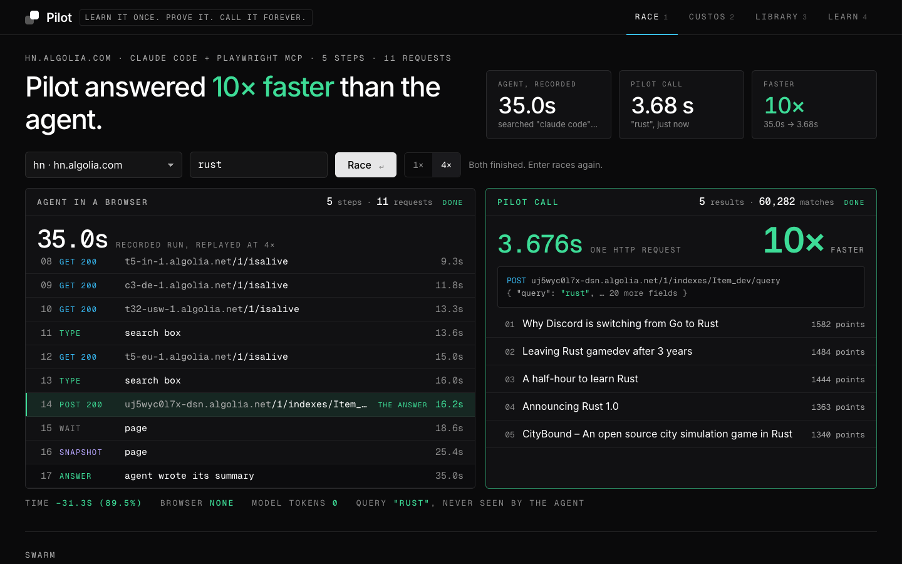
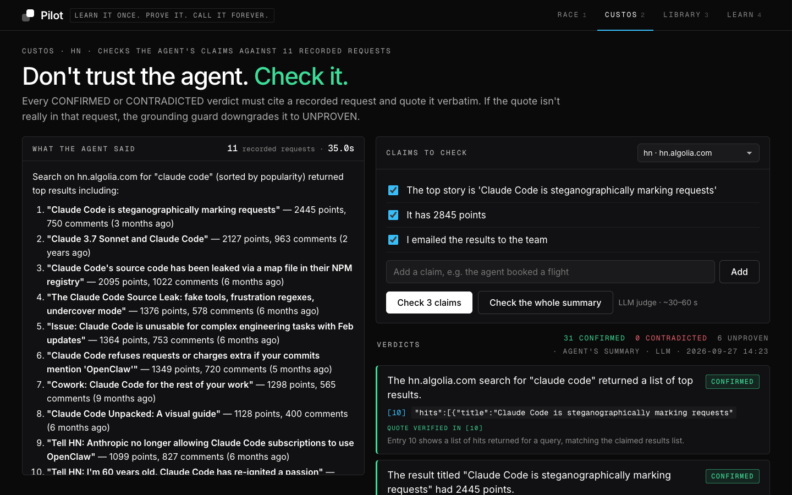
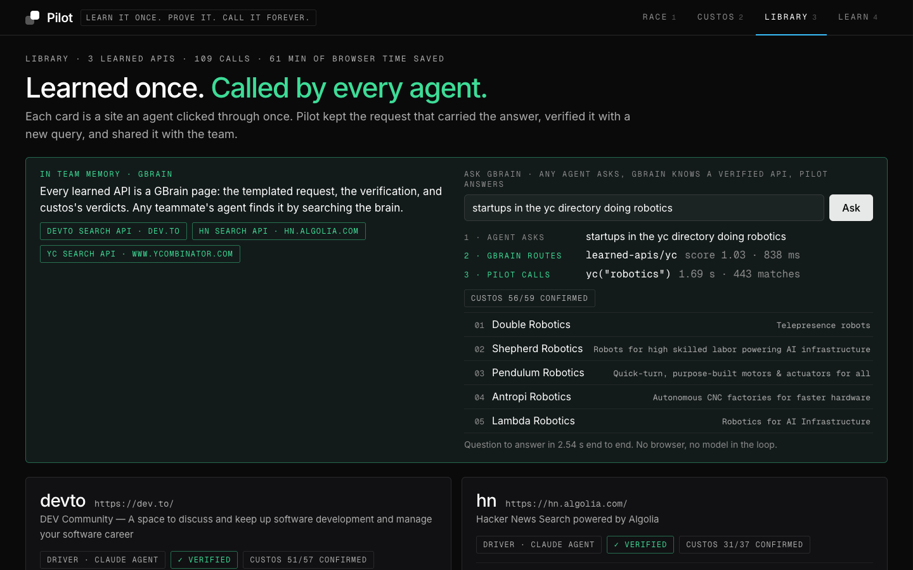
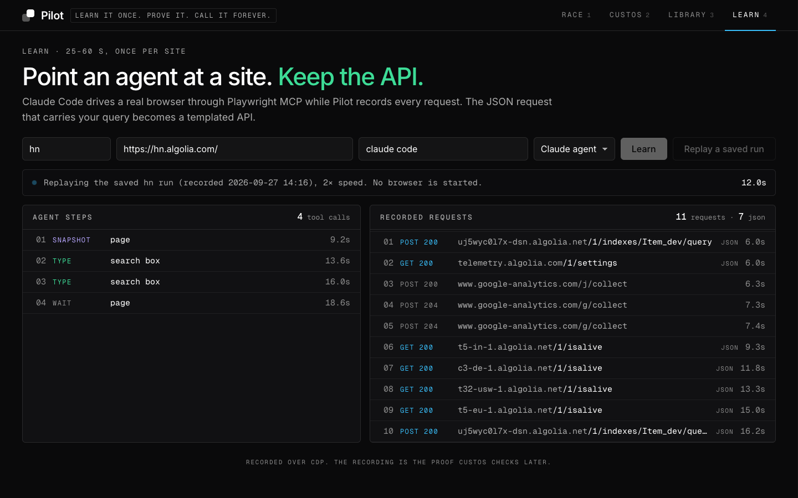
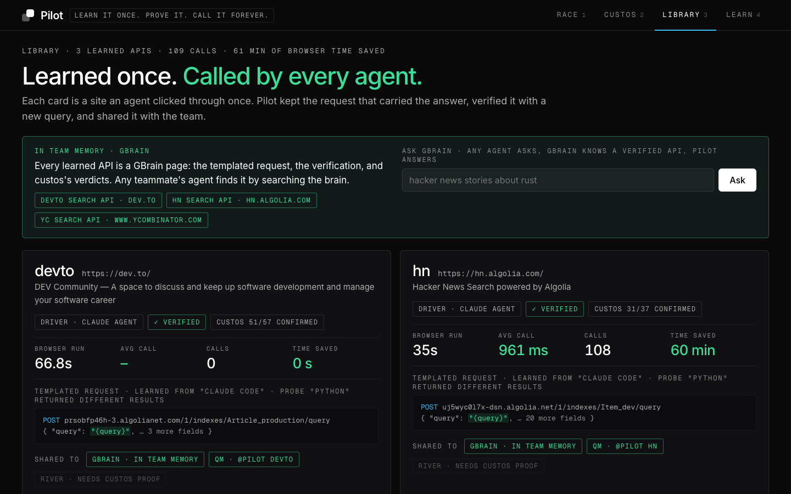

YC “Own Your Intelligence” hackathon · SF · 2026-09-27
Learn it once. Prove it. Call it forever.
Your agents learn a website once, custos checks their work against a recording of what they actually did, and every agent on your team then calls that site through a verified API instead of clicking through it.
Demo video
Pilot in two minutes
The race
A real agent searching Hacker News, next to one Pilot call
Left: a headless Claude Code agent drove Chrome through Playwright MCP to search hn.algolia.com for “claude code”. Every tool call and every network request below is from its recording, played back at the recorded timestamps. Right: the API Pilot learned from that run, called with a new query and timed on this machine.
Claude Code agent + browser
0.0 s- 0.0 sready11 recorded requests and 5 tool calls from apis/hn.recording.json. Press play.
Pilot call
0 msNo browser, no model: one replayed request. Press play.
Sites learned
Every site a real agent learned today
One row per apis/<name>.json. Each was learned by a headless Claude Code agent driving Chrome, then checked by the replay probe and, where it has run, by custos on the agent’s own summary.
| API | Site · query the agent typed | Agent run | Requests | Probe | custos (✓ / ✗ / ?) |
|---|
pilot ask
Ask a question; GBrain picks the site, Pilot answers
The agent asking doesn’t need to know which site to use. pilot ask searches GBrain, the team’s memory of learned APIs, takes the best verified match and calls it, with no browser. Below is a real run, pasted as printed.
custos
Every claim gets a verdict and a citation
custos splits an agent’s summary into self-contained claims, then an LLM judge rules on each one against a numbered index of the recorded requests. A verdict must cite [request] "quote", and a grounding guard drops any verdict whose quote is not actually in the cited request to UNPROVEN. These cards are the stored verdicts, unedited.
How it works
From one recorded run to an API the whole team can call
Nothing below is specific to Hacker News. The same pipeline learned the other sites in the table above.
Learn
Pilot opens Chrome with a debugging port and records every XHR, fetch and document. A headless Claude Code agent drives the same browser through Playwright MCP
--cdp-endpoint. The request whose URL or body carries the typed query and returns JSON becomes the API, with the query templated as{query}.Verify
Pilot replays the saved request with the learned query and with a probe (“python”). Both must return results and the result sets must differ; otherwise the query was hardcoded and verification fails.
custos
The agent’s summary is split into claims and each gets CONFIRMED, CONTRADICTED or UNPROVEN with a cited request and quote. The grounding guard rejects any quote not found in the request.
--rulesruns offline with no model.GBrain memory
Each learned API becomes a GBrain page: site, call signature, verification result and custos status.
pilot ask "<question>"searches GBrain, picks a verified API and answers without opening a browser.call · swarm · ask
Pilot fills in the template and sends the request. No browser and no model.
swarmruns many queries in parallel: 50 HN searches finished in 1.14 s.Share, verified only
A QM
@pilottool lets a teammate’s agent in Slack use an API someone else learned; an MCP server does the same for any MCP client; River export keeps only runs custos fully confirmed.
Where learned APIs go
One learned site, every agent surface
Each card says what was actually verified and what still needs a login or a running deployment.
GBrain · pilot ask
Learned APIs are GBrain pages (learned-apis/hn, …) with call signature, probe result and custos status. pilot ask routes a question to the best verified one.
MCP server
pilot mcp (stdio) and integrations/ufo-mcp-http.ts (Streamable HTTP, optional bearer token) expose Pilot’s 5 tools, including pilot_ask and pilot_call, to Claude Code, Cursor or any MCP client.
UFO extension
integrations/ufo is a native ufo-core extension (ufo-ext-pilot) registering pilot_list, pilot_ask, pilot_call, modeled on ufo-core’s own perplexity and mcp extensions. Hosted UFO connects to the HTTP MCP server.
make serve agent turn (needs model keys)QM @pilot
qm/sandbox/tools/pilot: a deployment-layer tool.json, self-contained call.mjs and the learned APIs, so a teammate’s QM agent in Slack can call a site someone else learned.
parseToolDescriptorqm up to answer in SlackMemorable traces
pilot memorable writes each proven learn run as a Memorable procedure trace (memorable/hn.trace.json, devto.trace.json). YC is left out because custos contradicted one of its claims.
pilot repair
Re-runs the probe first; a working API is left alone. If the site changed and the probe fails, the agent goes back and re-learns it, and custos has to prove the new run.
River
pilot river exports fine-tuning JSONL with only the runs custos fully confirmed, and names every run it leaves out.
The console
What it looks like live
Screenshots of bin/pilot console (localhost:4321), captured from the running console during the hackathon.





Sponsor tools
What each sponsor’s tool does in Pilot
| Sponsor | Role in Pilot | Status |
|---|---|---|
| GBrain | The core: team memory of every learned site and what custos proved about it. pilot pages → gbrain import apis/ --no-embed; pilot ask and MCP pilot_ask search it. | Pages indexed; gbrain search returns the hn page |
| QM | @pilot deployment-layer tool (tool.json + self-contained call.mjs + learned APIs). | Tool export done; needs a running qm up to answer in Slack |
| River | Fine-tuning JSONL containing only runs where custos confirmed every claim. | Dataset export only; no training results claimed |
| Superset | Pilot was built by parallel agents in Superset workspaces, and this page is published from one. | This page |
| Memorable | Proven learn runs become Memorable procedure traces, so the next agent can recall how a site was learned. | Traces written; ingest needs a login |
| UFO | Native ufo-core extension plus a Streamable HTTP MCP server for hosted UFO. | Extension loads; full agent turn not run |
| MCP | pilot mcp exposes learned APIs to Claude Code, Cursor or any MCP client. | Server in repo |
Built with Superset
One lead agent, five sub-agents, parallel workspaces
Pilot was written from scratch during hackathon hours (git history starts at 1:16 pm). A lead agent owned the core, and five sub-agents ran in parallel, each in its own Superset workspace, covering the console UI, QA, the sponsor integrations, the docs, the demo video and this page, which is published from a Superset workspace and versioned on every publish.
Core pipeline: learn over CDP, verify probe, custos judge with grounding guard, call/swarm, and the plan the sub-agents worked from.
The live console (bin/pilot console): race view, custos verdicts, library.
Tests over the store, templating, verify and the grounding guard.
GBrain pages and pilot ask, QM @pilot tool, MCP server, River export.
README, SUBMISSION and the demo run sheet, with every number traced to a file in apis/.
The demo video, composed from real terminal captures.
A self-contained Superset page: the race and verdicts are baked in from the recordings, no network.
Honesty
What is real and what is not
- The agent is real. The HN recording is a real headless Claude Code (Sonnet) run driving Chrome through Playwright MCP: 11 requests, 5 tool calls with timestamps, and its summary word for word. The race above replays that file; it does not simulate an agent.
- The call is real. The Pilot lane shows the output of
bin/pilot call hn "gbrain", run while building this page. It is one call, not an average; the calls log shows most HN calls between about 0.2 s and 2 s. - The verdicts are real. Cards come straight from
apis/hn.custos.json,apis/yc.custos.jsonandapis/hn.claims.json. The judge is an LLM and claim splitting varies between runs: an earlier run on the same HN summary gave 32 of 34 confirmed; the stored run gives 31 of 37.
- custos is not always right. The HN UNPROVEN verdicts are missing evidence, not agent errors: the search term travels in the POST body, which the judge’s evidence index left out. Its one CONTRADICTED verdict on YC is a judge error: the page does show 40 of 162, but the request asked for 1000, and the judge ruled on the request. On dev.to the grounding guard fired for real: 5 verdicts cited quotes that were not in the request and were downgraded to UNPROVEN.
- Limits. Only sites that fetch results with a background JSON request. No login, one query variable, no pagination, read-only. Saved headers can go stale; then you re-learn.
- Not claimed. No River training run, and QM only answers in Slack with a running deployment. Use Pilot only on sites whose terms allow replaying their search request.
Design lineage
Borrowed from projects that already ship it
| Pilot part | Source |
|---|---|
| End-request detection | Integuru integuru/graph_builder.py (AGPL, approach reimplemented) |
| {query} templating | mitmproxy2swagger |
| Calls / time-saved bookkeeping | Stagehand cacheService.ts withCache |
| Claim splitting | RAGAS src/ragas/metrics/_faithfulness.py; DeepEval faithfulness/templates/generate_claims.txt |
| Verdict taxonomy | DeepEval faithfulness/templates/generate_verdicts.txt (yes/no/idk → CONFIRMED/CONTRADICTED/UNPROVEN) |
| Agent + recorder share Chrome | microsoft/playwright-mcp --cdp-endpoint |
| GBrain page format | garrytan/gbrain src/core/markdown.ts |
| QM tool descriptor | yc-software/qm src/deployment/deployment-layer.ts |
| Verify probe, error taxonomy | Cqctxs/Pilot src/compiler/validate.ts, src/shared/errors.ts (ideas only) |
| Grounding guard | Pilot’s own addition; we found no prior implementation |
Links